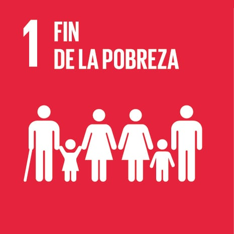

Objetivos de desarrollo sostenible
- Objetivo 1: Poner fin a la pobreza en todas sus formas en todo el mundo
- Objetivo 2: Poner fin al hambre, lograr la seguridad alimentaria y la mejora de la nutrición y promover la agricultura sostenible
- Objetivo 3: Garantizar una vida sana y promover el bienestar de todos a todas las edades
- Objetivo 4: Garantizar una educación inclusiva, equitativa y de calidad y promover oportunidades de aprendizaje durante toda la vida para todos
- Objetivo 5: Lograr la igualdad entre los géneros y empoderar a todas las mujeres y las niñas
- Objetivo 6: Garantizar la disponibilidad de agua y su gestión sostenible y el saneamiento para todos
Objetivo 1: Fin de la pobreza

Datos destacables
Según Ayuda en Acción, la tasa de pobreza mundial se ha reducido a la mitad desde el año 2000, aunque el avance es lento. Alrededor del 70% de la pobreza se concentra en Asia meridional y África.
Según el economista Jeffrey Sachs, erradicar la pobreza extrema costaría unos 175.000 millones de dólares al año,
menos del 1% de los ingresos conjuntos de los países más ricos.
Volver al menú
Objetivo 2: Hambre cero

Datos destacables
Según el Ministerio de Derechos Sociales, Consumo y Agenda 2030, el 8,9% de la población mundial, unos 690 millones de personas, padece hambre.
Si continúan las tendencias actuales, esa cifra podría llegar a 840 millones de personas en 2030. La meta 2.2 busca poner fin a todas las formas de malnutrición.
Volver al menú